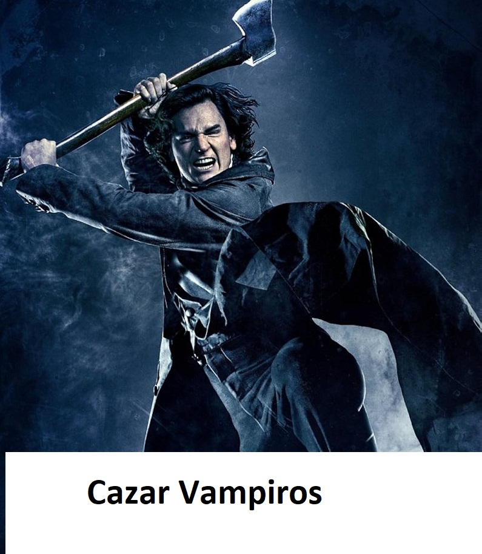
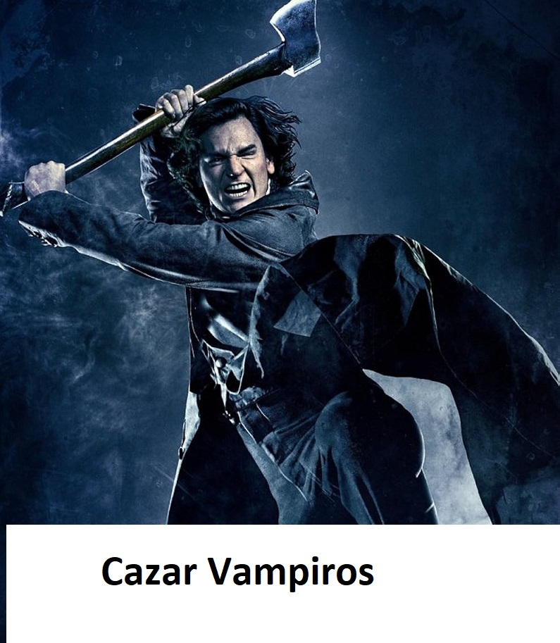
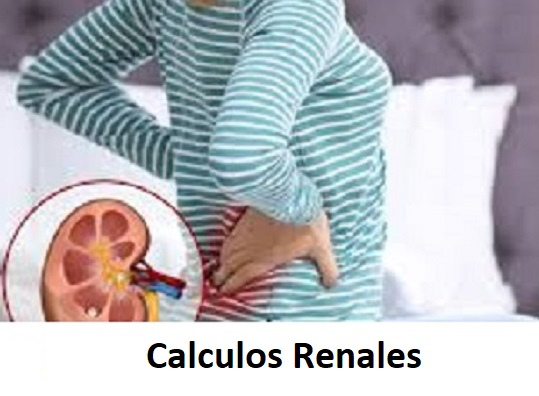
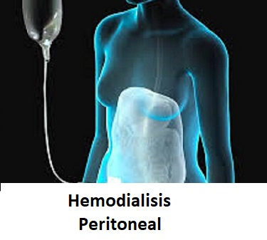
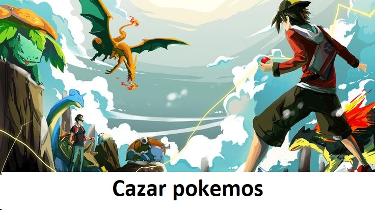
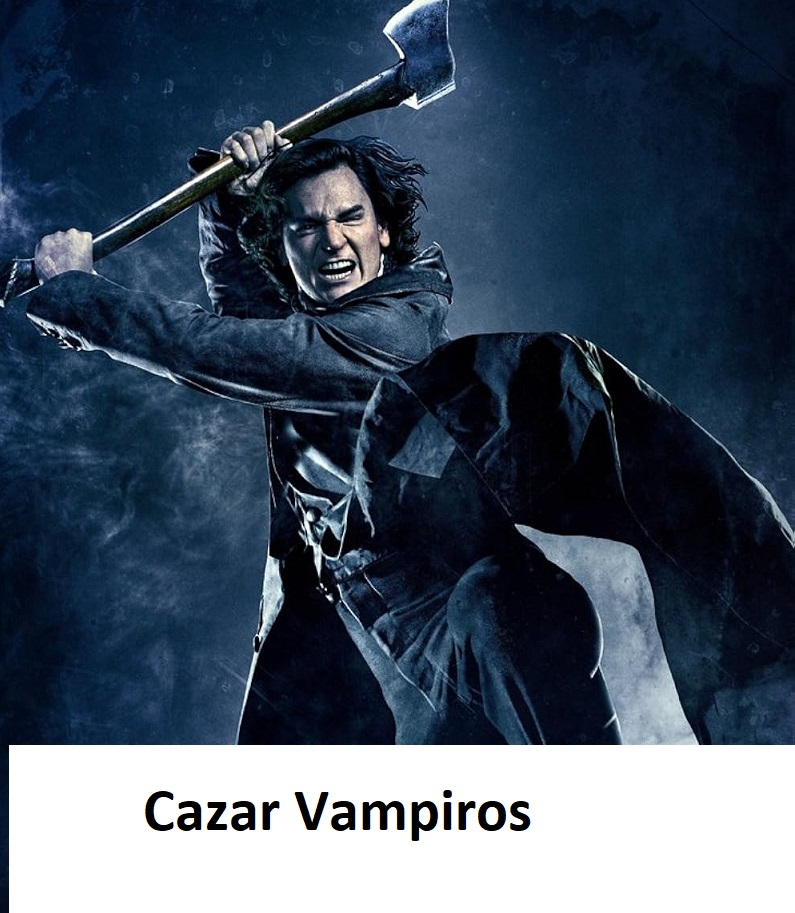

Servicios
 




Inicio
¡Atención, mortales! Soy el Dr. Gaudencio Sandoval, pero en los pasillos del hospital me conocen como "El Tractor de Toxinas". No uso capa, pero mi estetoscopio es mi arma, y mi batalla es contra los enemigos silenciosos: la hipertensión arteria⛔l, la diabetes traicionera y ese villano escurridizo llamado insuficiencia renal crónica.
Doctor
Graduado de la Universidad Autónoma de Nayarit como Médico cirujano y partero.
Primer lugar de mi generación.
Graduado por promedio.
Reconocimiento Nacional.
Especialista en Nefrología en Centro Médico de Occidente.
Cédula Profesional 666
Servicios
